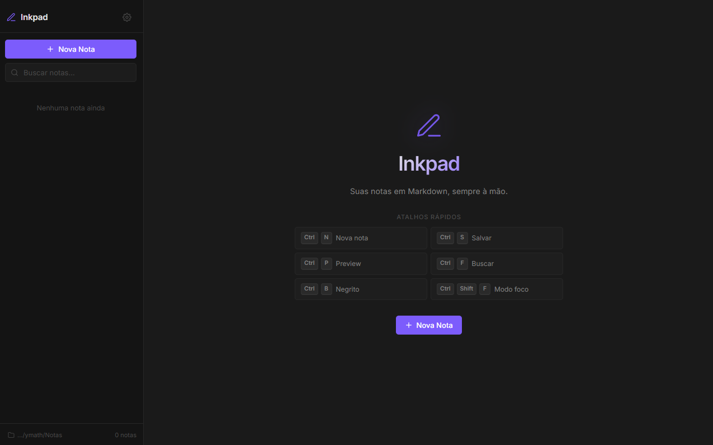

Desktop app
Inkpad
Editor de notas em Markdown para Windows, com leitura direta do sistema de arquivos, preview em tempo real, busca instantânea e auto-save. Um projeto focado em simplicidade de uso e performance local.
yanmathzz/inkpad